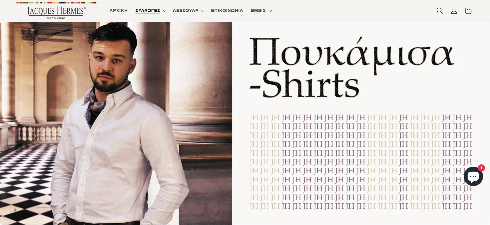
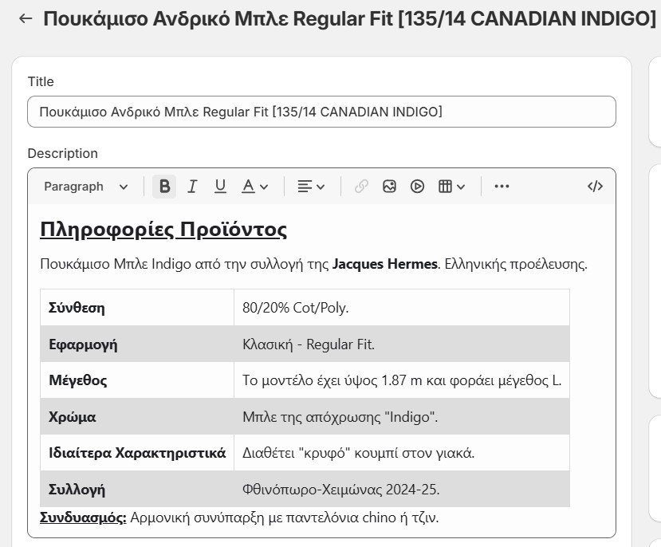

Δημιουργίες
Στον τομέα της εργασίας μου, έχω αναπτύξει σε μεγάλο βαθμό την εικόνα της ιστοσελίδας του καταστήματος, όπως και την λογική με την οποία παρουσιάζονται στον χρήστη
οι πληροφορίες. Η εικόνα διαμορφώθηκε κυρίως μέσω των γλωσσών HTML, CSS και Javascript ενώ αξιοποιήθηκαν και εργαλεία που προσφέρονται από την πλατφόρμα φιλοξενίας.

Επιπλέον, έχω παράξει γραφιστικό υλικό που έχει αξιοποιηθεί στις σελίδες της επιχείρησης στα μέσα κοινωνικής δικτύωσης και διάφορα εκτυπώσιμα για το φυσικό κατάστημα.
Τέλος, μεγάλο κομμάτι της ενασχόλησής μου αποτελεί η ταξινόμηση των προϊόντων και η προσθήκη κατάλληλων περιγραφών ώστε να είναι ελκιστικά στον επισκέπτη της ιστοσελίδας.
